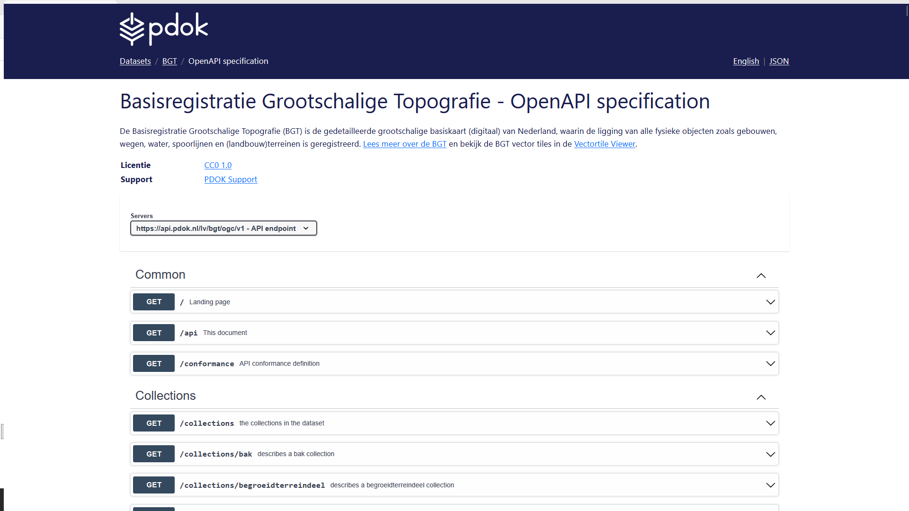
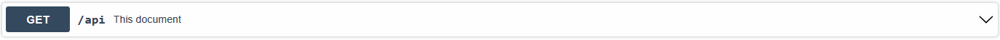
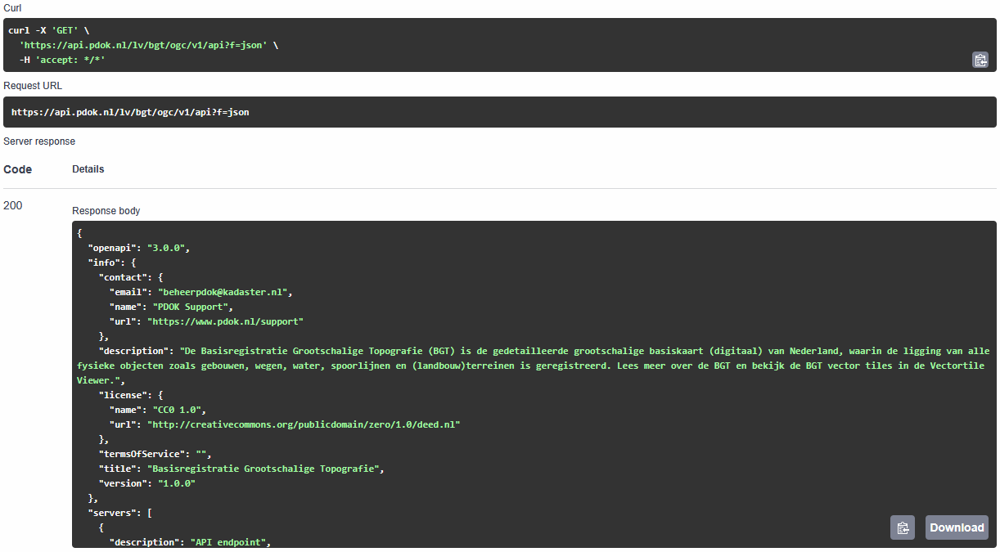
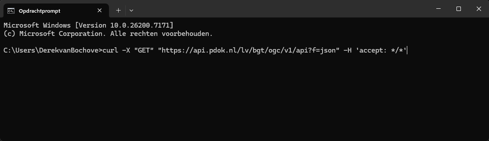
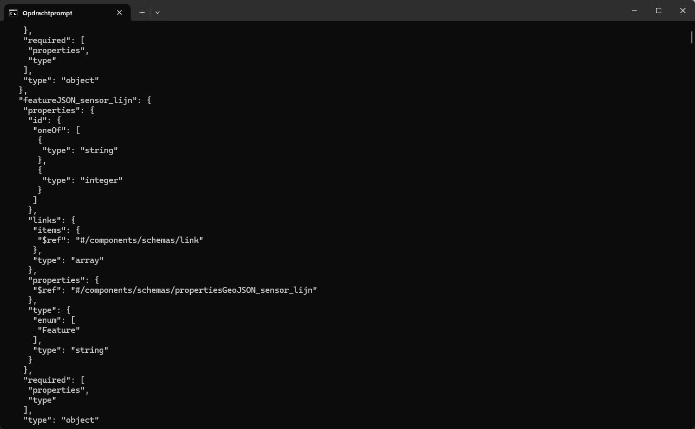
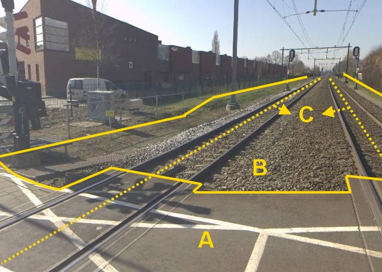
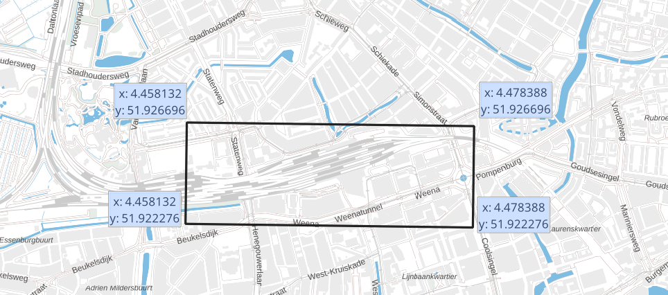

Bevraag OGC API - Features met curl
We hebben eerder gezien hoe je de API-documentatie in de browser kunt bekijken. Nu is het tijd om echt aan de slag te gaan met de API.
In de commandline kun je met behulp van de tool cURL data opvragen en versturen. Je kunt dit ook gebruiken om API's om data op te vragen en die data vervolgens terug te krijgen. Zo ook de OGC API's van PDOK. Je krijgt het resultaat terug als JSON-bestand.
Ontwikkelaars gebruiken dit principe om API's te implementeren in hun eigen applicaties.
In dit deel stel je met behulp van de OpenAPI specification GET requests samen om de OGC API - Features van de Basisregistratie Grootschalige Topografie (BGT) te bevragen. Die requests vuur je vervolgens met curl af. Het resultaat ontvang je als json.
Voorbereiding
 Open een commandline / terminal venster.
Open een commandline / terminal venster.
Waarschuwing
Gebruik niet de PowerShell terminal. Die heeft een ingebouwde eigen versie van curl met veel minder mogelijkheden. De voorbeelden zullen daar niet in werken.
Met de OpenAPI specification pagina kun je heel makkelijk commando's voor curl samenstellen.
Ga naar de OpenAPI specification van de BGT.
Weet je niet meer waar je die kunt vinden? Kijk dan even in één van de vorige onderdelen.

OpenAPI specification opvragen
Laten we beginnen met een simpele vraag. We vragen eerst de OpenAPI specification zelf op.
Klap 'GET /api This document' open:

Klik op Try it out
Klik op Execute
Je krijgt nu het curl commando dat is afgevuurd en het resultaat (response) te zien:

Er is één parameter meegegeven: geef het resultaat als json. En we krijgen de specificatie inderdaad netjes te zien als json-document.
We kunnen het curl commando kopiëren en zelf uitvoeren in de commandline.
Waarschuwing
Pas voor de Windows commandline (cmd.exe) de kant-en-klare curl commando's aan: zet alles op één regel en verander de 'enkele quotes' in "dubbele quotes". Anders zullen de voorbeelden niet werken.
Kopieer het curl commando en plak het in de commandline
Voor Windows:
curl -X "GET" "https://api.pdok.nl/lv/bgt/ogc/v1/api?f=json" -H "accept: */*"

Druk op Enter en bekijk het resultaat:

Vraag collecties op
We gaan met behulp van curl informatie over collecties opvragen.
Welke collecties zijn er allemaal?
Stel dat je wilt weten welke collecties er allemaal zijn. Je kunt dan de GET /collections call gebruiken.
Klap 'GET /collections' open, klik op Try it out en klik op Execute.
Kopieer het commando en voer het uit in de commandline.
Voor Windows:
curl -X "GET" "https://api.pdok.nl/lv/bgt/ogc/v1/collections?f=json" -H "accept: */*"
Bekijk het resultaat.
Je krijgt een overzicht te zien van alle collecties in deze OGC API - Features.
Response body:
{
"links": [
...
],
"collections": [
...
]
}
Tip
Je kunt de URL's ook in je browser plakken en de json in je browser bekijken. Browsers maken json meestal wat beter leesbaar.
Informatie over één specifieke collectie
Je kunt ook de informatie van een specifieke collectie opvragen. Laten we als voorbeeld de 'spoor' collectie nemen.

Voor Windows:
curl -X "GET" "https://api.pdok.nl/lv/bgt/ogc/v1/collections/spoor?f=json" -H "accept: */*"
Voer dit uit en bekijk het resultaat.
Response body:
{
"id": "spoor",
"title": "Spoor (SPR)",
"description": "De as van het spoor, dat wil zeggen het midden van twee stalen staven op een onderling vaste afstand, waarover trein, tram, of sneltram rijdt.",
"keywords": [
...
],
"extent": {
...
}
...
}
Vraag
Wat voor informatie geeft dit?
CRS
Het zal je opgevallen zijn dat er ook informatie tussen staat over het 'CRS'. Dit is het Coordinate Reference System. Er bestaan veel verschillende CRS'en. Kort gezegd bepaalt het CRS hoe de geografische coördinaten worden opgeslagen en hoe de data op de aardbol wordt geprojecteerd (zie ook Achtergrondinformatie). PDOK biedt zijn data in verschillende CRS'en aan.
Vraag
In welke CRS'en wordt de spoorcollectie aangeboden? Hoe heten die CRS'en?
Hint
Klik in https://api.pdok.nl/lv/bgt/ogc/v1/collections/spoor?f=json in het crs object op de code van een CRS. Je krijgt dan een XML-document te zien op opengis.net. Daarin vind je ook de naam.
Bekijk het schema van een collectie
Soms wil je weten welke kolommen een dataset heeft, en wat die kolommen precies betekenen en welk datatype ze zijn. Dit kun je bekijken in het schema. Ook OGC API - Features ondersteunt dit.
Vraag
Hoe kun je het schema bekijken?
Bekijk het antwoord
Voor Windows:
curl -X "GET" "https://api.pdok.nl/lv/bgt/ogc/v1/collections/spoor/schema?f=json" -H "accept: */*"
Response body:
{
"$schema": "https://json-schema.org/draft/2020-12/schema",
"$id": "https://api.pdok.nl/lv/bgt/ogc/v1/collections/spoor/schema",
"title": "Spoor (SPR)",
"description": "De as van het spoor, dat wil zeggen het midden van twee stalen staven op een onderling vaste afstand, waarover trein, tram, of sneltram rijdt.",
"type": "object",
"required": [
"id",
"version"
],
"properties": {
"id"
...
}
Voer dit uit en bekijk het resultaat.
Vraag
In welke attributen vind je een datum/tijd?
Vraag items op
Laten we ook eens ín de collecties kijken.
Vraag de items van een collectie op
Door items toe te voegen aan de call voor een specifieke collectie, kunnen we de items zelf opvragen.
Voor Windows:
curl -X "GET" "https://api.pdok.nl/lv/bgt/ogc/v1/collections/spoor/items?f=json" -H "accept: */*"
Voer dit uit en bekijk het resultaat.
Vraag
Hoeveel items heb je gekregen?
Er is standaard een limiet op het aantal items. We kunnen ook zelf expliciet een limiet opgeven, die iets ruimer is.
Vraag
Hoe kun je een limiet instellen op het aantal items? Zoek het antwoord op in de OpenAPI specification.
Bekijk het antwoord
Voor Windows:
curl -X "GET" "https://api.pdok.nl/lv/bgt/ogc/v1/collections/spoor/items?limit=100&f=json" -H "accept: */*"
Voer dit uit en bekijk het resultaat.
Vraag één specifiek item op
Stel dat je geïnteresseerd bent in één specifiek item, dan kun je die door middel van een filter op het id van dat item opvragen. Je moet dan wel dat specifieke id weten.
Voor Windows:
curl -X "GET" "https://api.pdok.nl/lv/bgt/ogc/v1/collections/spoor/items/7022ff26-12e4-5dc8-9a33-56db2da7e607?f=json" -H "accept: */*"
Voer dit uit en bekijk het resultaat.
Response body:
{
"type": "Feature",
"properties": {
...
},
"geometry": {
...
}
...
}
Vraag items op binnen een bounding box
Laten we het ruimtelijk maken. Met een extra parameter kun je items opvragen binnen een specifiek gebied: een bounding box (ook wel bbox). Je vraagt dit gebied op met het x- en y-coördinaat van de linkeronderhoek, gevolgd door het x- en y-coördinaat van de rechterbovenhoek. Bijvoorbeeld: 4.458132,51.922276,4.478388,51.926696

Voor Windows:
curl -X "GET" "https://api.pdok.nl/lv/bgt/ogc/v1/collections/spoor/items?bbox=4.458132,51.922276,4.478388,51.926696&f=json" -H "accept: */*"
Zoek zelf de coördinaten op van de bounding box van jouw woonplaats met behulp van http://bboxfinder.com
En vraag de spoorlijnen op binnen die bbox met behulp van curl.
Vraag items op in een bepaald CRS
Standaard worden de features uitgeleverd in CRS84 coördinaatreferentiesysteem (CRS). Je kunt de features ook in andere CRS'en opvragen. Dit is handig wanneer je de data wilt combineren met datasets met een ander CRS, of voor projectie op een kaart. Met een parameter kun je aangeven in welk CRS je de data wilt terugkrijgen.
Vraag op in welke CRS'en de spoorcollectie beschikbaar is
Bekijk het antwoord
Voor Windows:
curl -X "GET" "https://api.pdok.nl/lv/bgt/ogc/v1/collections/put?f=json" -H "accept: */*"
Response body:
...
"crs": [
"http://www.opengis.net/def/crs/OGC/1.3/CRS84",
"http://www.opengis.net/def/crs/EPSG/0/28992",
"http://www.opengis.net/def/crs/EPSG/0/3857",
"http://www.opengis.net/def/crs/EPSG/0/4258"
]
...
Vraag de items op in de RD/Amersfoort CRS
Voeg de parameter toe voor het crs en de URL van RD/Amersfoort toe. Kijk in de API specification als je er niet meteen uitkomt.
Bekijk het antwoord
Voor Windows:
curl -X "GET" "https://api.pdok.nl/lv/bgt/ogc/v1/collections/spoor/items?crs=http://www.opengis.net/def/crs/EPSG/0/28992&f=json" -H "accept: */*"
Response body:
...
{"type":"FeatureCollection",
...
"features":[
...
]
...
}
...
Samenvatting
Je hebt in de oefeningen hierboven de OpenAPI-specificatie opgevraagd waarmee je zelf API calls kunt samenstellen en voorbeelden van calls en responses kunt bekijken. Daarna heb je informatie over collecties opgevraagd en de items in die collecties opgevraagd. En dat allemaal in de commandline. Je kunt je voorstellen dat je dit soort calls in elk soort applicatie zou kunnen integreren. Hopelijk geeft dit onderdeel een goede basis voor de volgende onderdelen.